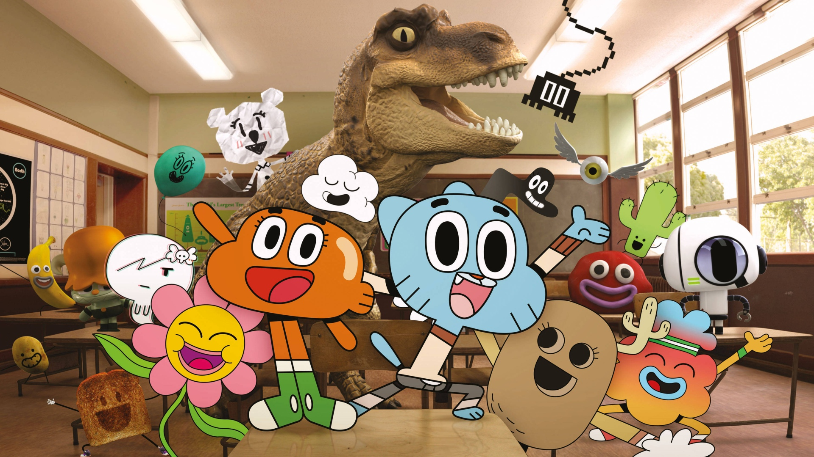

ГамболВики
Удивительный мир Гамбола
Удивительный мир Гамбола - мультфильм сделанный по заказу Cartoon Network
Главные персонажи: Гамбол, Дарвин, Анаис, Николь Воттерсон, Ричард Воттерсон
Гамбол
Дарвин
Анаис
